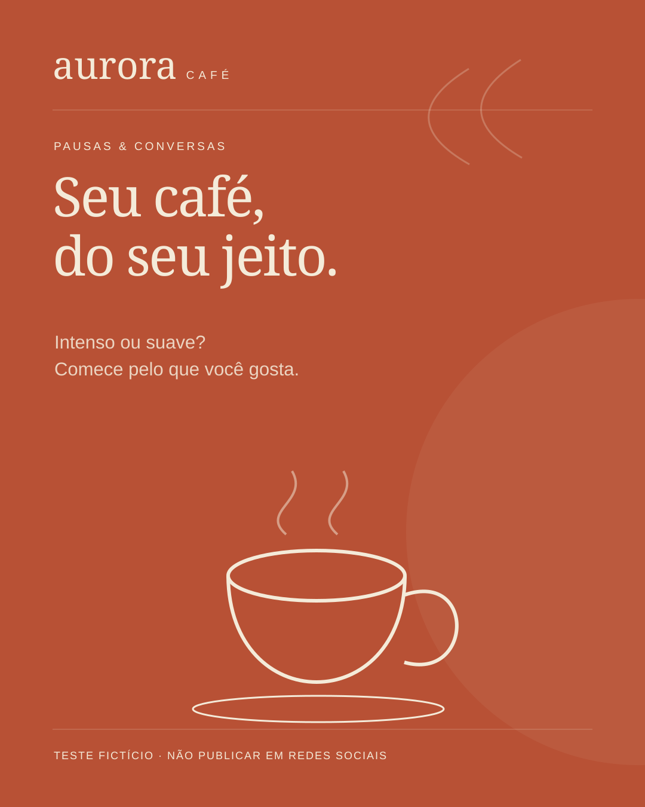

POST · 2026-11-01
Seu café, do seu jeito
Legenda revisada
Não existe uma única forma de aproveitar uma pausa. Se você gosta de sabores intensos, comece perguntando sobre essa característica. Prefere algo mais suave? Conte também. No Aurora Café, a conversa começa pelo seu gosto. Qual é o café que combina com a sua pausa? ☕ TESTE FICTÍCIO — não publicar.
Direção visual
Fundo terracota, ilustração de xícara em creme, título à esquerda e assinatura Aurora Café no rodapé.
Baixar arte SVG ↗